수업 조건 · 3 HOURS AI CODING CHALLENGE
3시간 안에 AI로 2D 생활형 RPG
공통 기능 5개(MAP · NPC 2명 이상 · EVENT · HOUSE · VISUAL)를 넣고, 레퍼런스 스타일 하나를 정해 TARGET과 결과를 비교합니다. Prompt Log와 BEST · WORST 프롬프트가 함께 산출물입니다.
- MAP
- NPC
- EVENT
- HOUSE
- VISUAL
SUB · GAME · AI WORKFLOW
태엽 마을 · AI 세 창 분업 2D RPG
태엽이 풀려 멈춘 마을에서 찻주전자 보글이 축음기 그라모를 다시 감는 1930년대 카툰풍 RPG입니다. 게임 로직, 이미지, 소리를 AI 세 창에 나눠 맡기고 저는 방향을 정하고 지시하고 검수했습니다. 3시간 수업 챌린지로 1·2막을 만들고, 이어서 7막까지 늘렸습니다.
GitHub Pages에 올린 게임을 그대로 불러옵니다. 화면을 누른 뒤 키보드로 조작합니다. 오른쪽 패널은 게임 안의 상태 값을 읽어서 보여 줍니다.
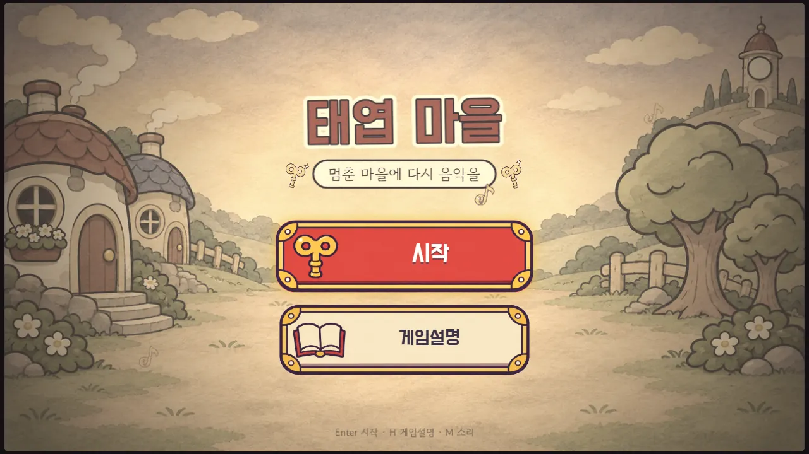
WASD 이동 Space 점프 E 상호작용 Q 태엽 ↔ 건전지 M 소리새 창에서 열기 ↗
수업 조건 · 3 HOURS AI CODING CHALLENGE
공통 기능 5개(MAP · NPC 2명 이상 · EVENT · HOUSE · VISUAL)를 넣고, 레퍼런스 스타일 하나를 정해 TARGET과 결과를 비교합니다. Prompt Log와 BEST · WORST 프롬프트가 함께 산출물입니다.
결과 · 7막 구성
수업 시간 안에 1막(튜토리얼)과 2막(보스전), 시작 화면, 소리 연결까지 마쳤습니다. 이후 이야기를 이어 붙여 횡스크롤 구간과 보스 3명이 나오는 7막까지 만들었습니다.
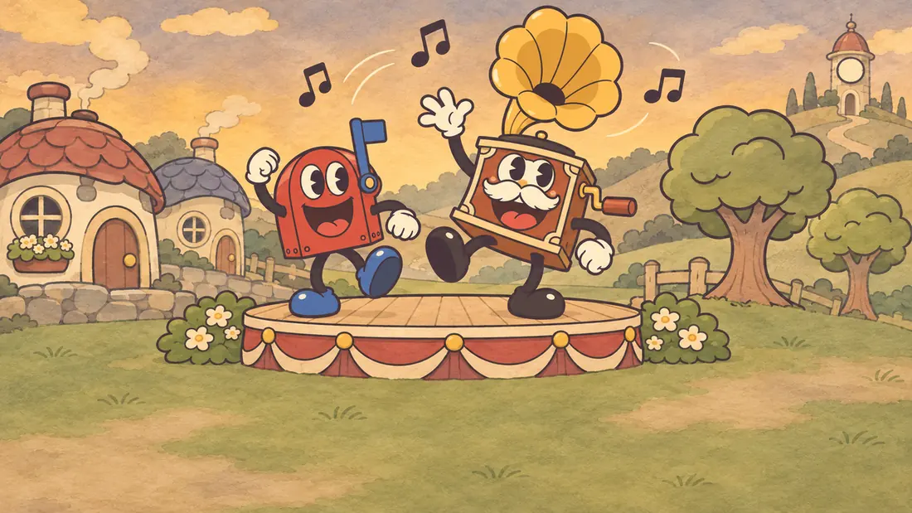
1막멈춘 음악튜토리얼 · 태엽 감기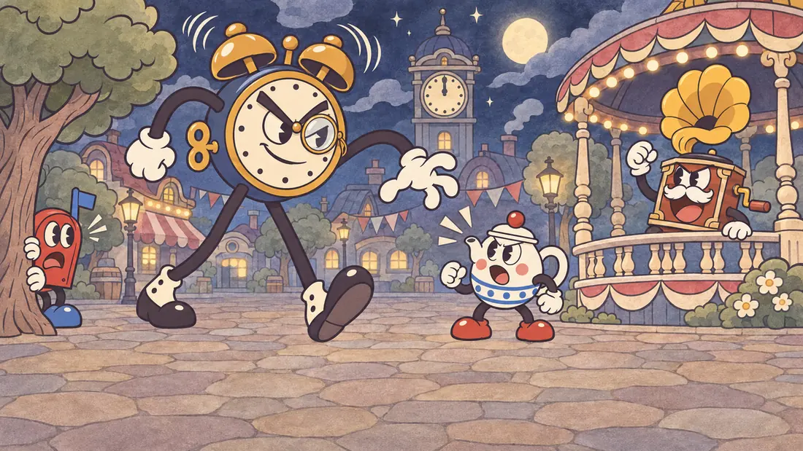
2막째깍 백작의 습격보스 · 과감기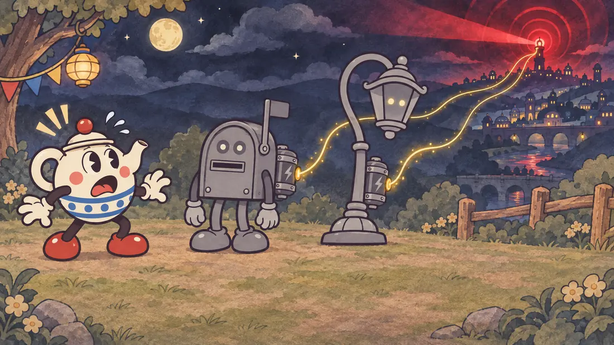
3막미스터 라디오가 온 날건전지 · Q 갈아끼우기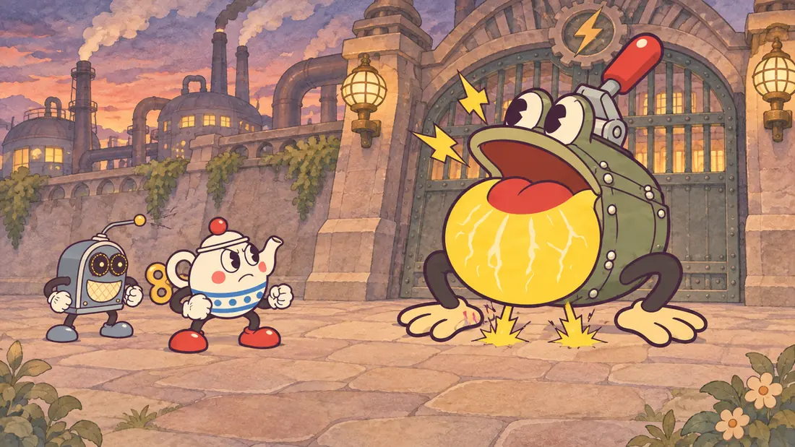
4막발전소로 가는 길횡스크롤 · 중간 보스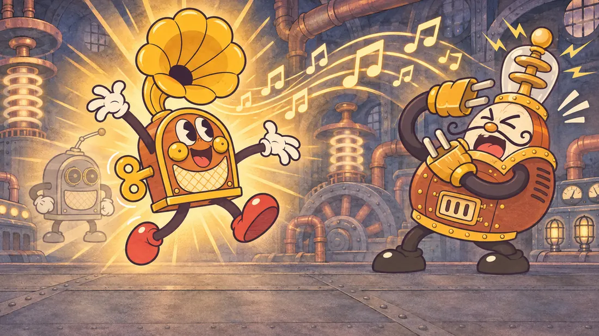
5막볼트 남작플러그 뽑기 · 변신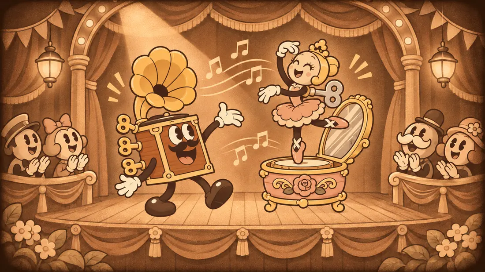
6막오르골이 도착한 날풀어 주기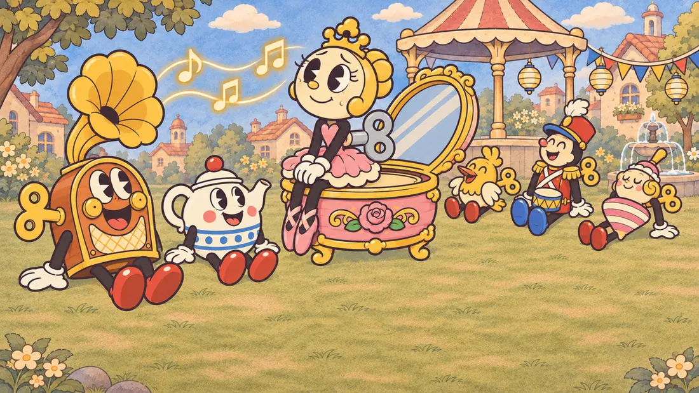
7막멈추지 않는 무도회춤 상태 · 멜로디 여왕세 AI가 동시에 만들어도 한 게임으로 보이고, 한 게임으로 돌아가게 하기
3시간 안에 끝내려면 이미지를 기다리면서 코드를 짤 수 없었습니다. 이미지 · 로직 · 소리를 동시에 진행하기로 하고, 그때 생길 문제를 먼저 적었습니다.
| 동시에 돌리면 생기는 문제 | 만든 장치 | 기준 파일 |
|---|---|---|
| 이미지마다 선 굵기 · 눈 모양 · 색이 달라짐 | 기준 이미지 1장을 먼저 승인받고, 스타일 문장은 한 글자도 바꾸지 않고 붙임 | style_anchor.png · ASSET_GUIDE.md |
| 파일 이름이 달라 게임이 이미지를 못 찾음 | ID · 경로 · 크기를 한 파일에 먼저 등록하고, 세 창 모두 그 파일만 기준으로 삼음 | manifest.js · audio_manifest.js |
| 이미지가 오기 전에는 로직을 확인할 수 없음 | 이미지가 없으면 임시 도형으로 그리고, 파일이 들어오면 2초 안에 자동으로 바꿈 | src/assets.js |
| 한 창이 다른 창의 파일을 고쳐 충돌함 | 창마다 고칠 수 있는 폴더를 정하고, 커밋과 배포 빌드는 로직 창만 함 | AGENTS.md |
04 · BEHIND
어떻게 나누고, 어떻게 지시하고, 결과를 어떻게 걸렀는지에 대한 기록입니다.
지시 → 기준 문서 → JOB-0 승인 → 아트팀 동시 생성 → 선행 JOB 대기 → 로직 · 사운드 동시 진행 → 게임 반영 순서입니다. 말풍선과 로그는 실제 지시와 작업 기록을 바탕으로 만들었습니다.
팀마다 고칠 수 있는 폴더를 정하고, 모든 팀이 같은 md 문서를 읽고 시작하게 했습니다. 팀끼리 만나는 지점은 이름 목록 두 개뿐입니다. 아트팀이 boss_volt_idle.png를 저장하면 로직팀 코드는 그 이름을 이미 쓰고 있어서 따로 연결할 일이 없습니다.
사내 규정 · md로 무드 통일 모든 팀이 작업 전에 읽음
로직팀 Claude Code
src/*.js 게임 코드지시: 문장 프롬프트 + 피드백
아트팀 Codex 창 1 ~ 4
assets/ 이미지만지시: "JOB18 진행해" 한 줄
사운드팀 Claude Code 별도 창
assets/audio/만지시: "AUDIO3.md 진행해"
컷신이나 초상화는 앞 JOB에서 나온 캐릭터 이미지를 레퍼런스로 붙여야 같은 얼굴로 나옵니다. 그래서 지시서마다 “먼저 끝나 있어야 하는 JOB”을 적고, 결과가 없으면 시작하지 말고 알리게 했습니다. 재생을 누르면 실제 순서대로 진행됩니다. 노드에 마우스를 올리면 의존 관계가 보입니다.
JOB-0(스타일 앵커)이 승인되기 전에는 어떤 JOB도 시작하지 않습니다.
각 창에 보낸 지시와 AI가 그 뒤에 한 작업을 순서대로 재생합니다. 지시문은 실제 대화 기록에서 가져왔고 오타와 띄어쓰기만 고쳤습니다.
이미지를 여러 창에서 동시에 생성해도 스타일이 흔들리지 않도록 순서를 고정했습니다.
01
주인공 · NPC · 나무 · 열쇠 7개와 팔레트 10색을 한 장에 그린 기준 이미지를 먼저 만들고 확인했습니다. 승인 전에는 다른 작업을 시작하지 않고, 이후 모든 생성에 이 이미지를 첨부합니다.
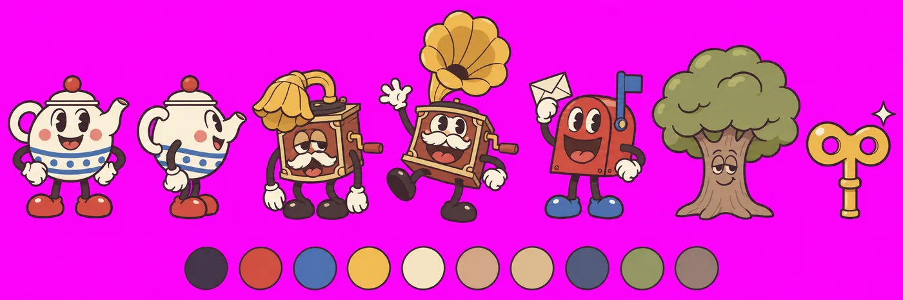
02
고정 블록 3개는 그대로 붙이고, 바뀌는 건 시트 구성과 ID별 한 줄뿐입니다.
① STYLE BLOCK (고정)
STYLE: 1930s rubber hose cartoon, hand-inked cel
animation look, original characters.
Thick uniform outline in dark plum #3D3346 ...
pie-cut eyes (black ovals with a small wedge cut out)
...No text, letters or numbers anywhere.
② SPRITE RULES (고정) — #FF00FF 마젠타 배경
③ CHARACTER BLOCK (고정) — BARON VOLT
④ 시트 구성 — JOB마다 다름
⑤ manifest.js의 prompt 값
BARON VOLT standing tall and smug facing LEFT,
plug arms crossed, coil head crackling ...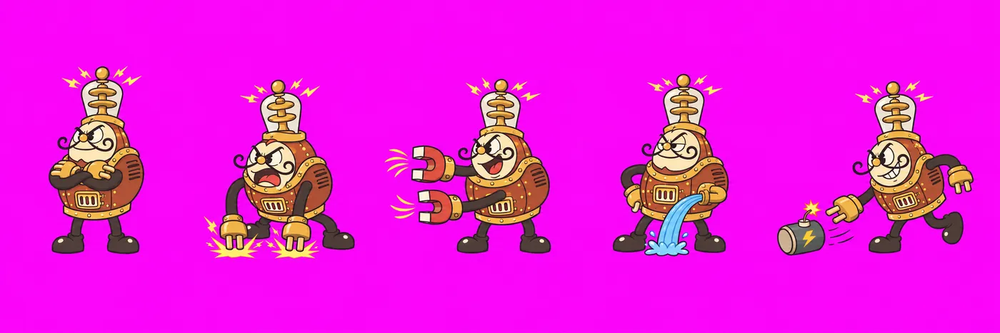
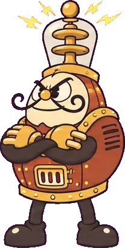
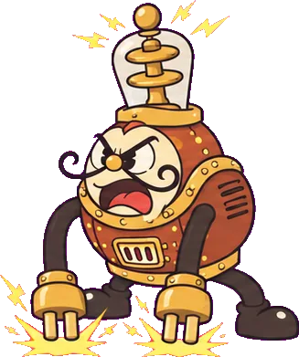
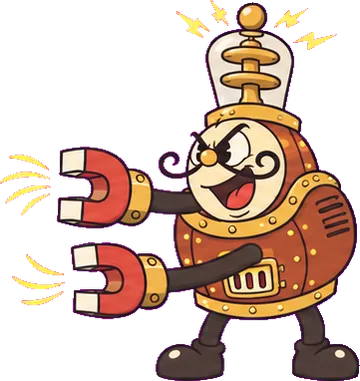
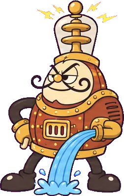
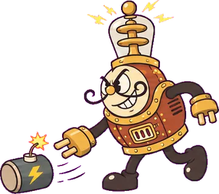
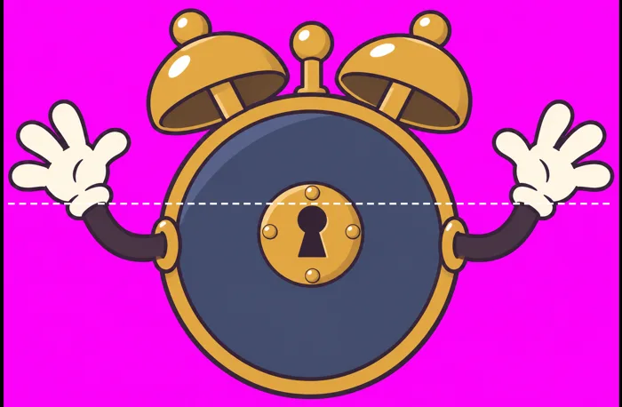
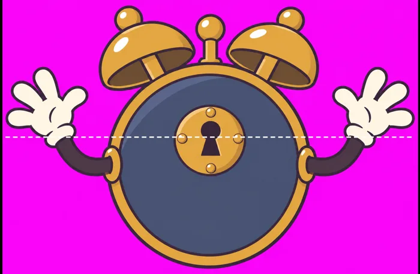
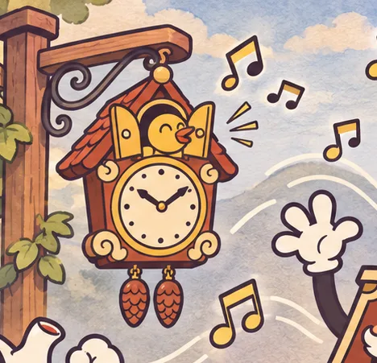
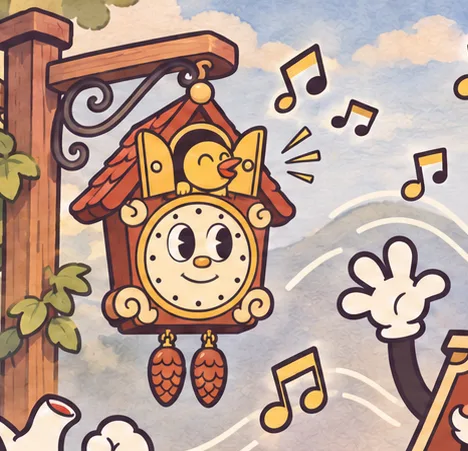
게임은 시작할 때 manifest의 이미지를 모두 불러오고, 없는 파일은 2초마다 다시 찾습니다. 없는 동안에는 코드가 그린 임시 도형을 씁니다. 임시 도형도 외곽선 색과 파이 눈 규칙을 지켜서, 이미지 없이도 장면의 크기와 판정을 확인할 수 있었습니다.
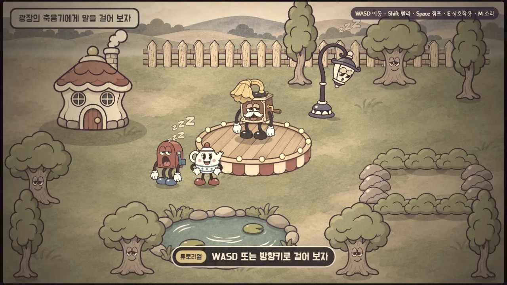
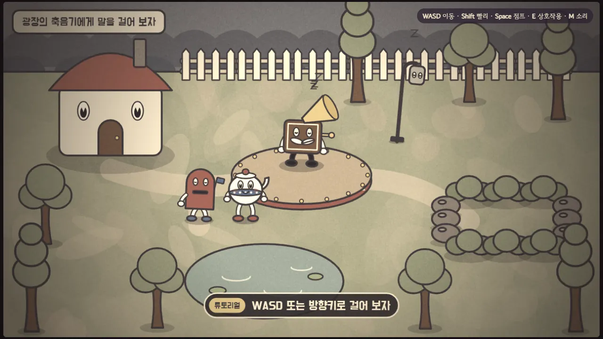
임시 도형생성 이미지생성 이미지는 여백과 크기가 제각각입니다. 투명 여백을 잘라내고, manifest에 적은 높이에 맞춰 발끝 기준으로 세웁니다. 배경이 마젠타나 흰색이면 테두리부터 지웁니다.
파일이 없으면 같은 그룹의 다른 이미지 → 그것도 없으면 임시 도형. 걷기 프레임이 없으면 대기 이미지 한 장에 튀기 · 눌림 · 기울기를 코드로 입힙니다.
소리 파일이 없거나 해석에 실패하면 그 소리만 조용하고 게임은 계속 돕니다. 소리 창이 파일을 추가해도 게임 쪽은 고칠 게 없습니다.
3~7막에만 이미지가 170개 넘게 필요했습니다. 창마다 긴 설명을 붙여 넣는 대신, 로직 창이 manifest에서 지시서를 만들게 하고 이미지 창에는 번호만 보냈습니다.
Codex 창 1
JOB18 진행해
Codex 창 2
JOB19 진행해
Codex 창 3
JOB20 진행해
Codex 창 4
JOB21 진행해
1차 4개를 동시에 → 캐릭터가 나온 뒤 2차(컷신)
# AGENTS.md — 명령 규칙
사람이 "JOB9 진행해"처럼 번호만 말하면
jobs/JOB-09.md를 열고 그 지시서만 끝까지 수행한다.
먼저 끝나 있어야 하는 JOB의 결과가 없으면
시작하지 말고 사람에게 알린다.
# jobs/JOB-18.md (make_jobs.py가 manifest에서 생성)
- 만들 파일: 12개 · 먼저 끝나야 하는 JOB: 없음
- 첨부: style_anchor.png, boss_idle.png(2막 백작과 같은 크기감)
- 시트 a: idle → spark → magnet → spray → throw
python tools/slice_sheet.py assets/sheets/JOB-18_a.png \
--names boss_volt_idle,boss_volt_spark,...
- 잘린 개수가 다르면 --dry로 보고 다시 만든다소리 창에도 같은 방식으로 jobs/AUDIO.md를 만들고 “처음부터 끝까지 읽고 그대로 진행해 줘. src/는 수정하지 말고 커밋 · 빌드도 하지 마.”로 범위를 정해 보냈습니다.
직접 플레이하면서 걸린 부분을 적어 보내고, 고친 결과를 다시 플레이했습니다. 왼쪽이 제 피드백, 오른쪽이 바뀐 결과입니다.
오프닝 컷신에 밤중에 시계탑 그림자가 열쇠를 뽑아 가는 장면을 넣었습니다(2막 보스 복선). 감기는 마우스로 원을 그리거나 A · D를 번갈아 누르는 모달로 만들었습니다. 1/3 · 2/3에서 “딸깍” 고정되고, 손을 떼면 천천히 풀립니다.
째깍 백작은 때려서 이기는 게 아니라 지쳤을 때 등의 태엽을 지나치게 감아(과감기) 스프링을 튕겨 내야 합니다. 스프링 3개가 빠지면 작은 뻐꾸기시계가 됩니다. 1930년대 카툰 톤에 맞춰 아무도 다치지 않는 결말입니다.
이야기에서 건전지는 낭만을 빼앗는 물건이지만, 플레이에서는 둘 다 필요하게 수치를 나눴습니다. 장애물마다 맞는 모드가 정해져 있습니다.
| 태엽 | 건전지 | |
|---|---|---|
| 걷기 | 230 px/s | ×1.6 |
| 점프 | 모아 뛰기 122 → 226px | 봉인 |
| 소모 | 이동 3/s · 정지 0.5/s | 7/s |
| 회복 | 체크포인트 | 충전소에서 E |
| 맞는 장애물 | 구덩이 · 물웅덩이 · 전선 | 컨베이어 · 셔터 · 자동문 |
Q를 누르면 보스 · 공격 · 장치 · 중력이 모두 0.6초 멈추고 화면이 회색으로 바뀝니다. 그동안 건전지가 딸깍 들어가거나 태엽이 끼기기긱 감깁니다. 공중에서도 됩니다. 이제 패턴을 보고 바로 바꾸면 됩니다.
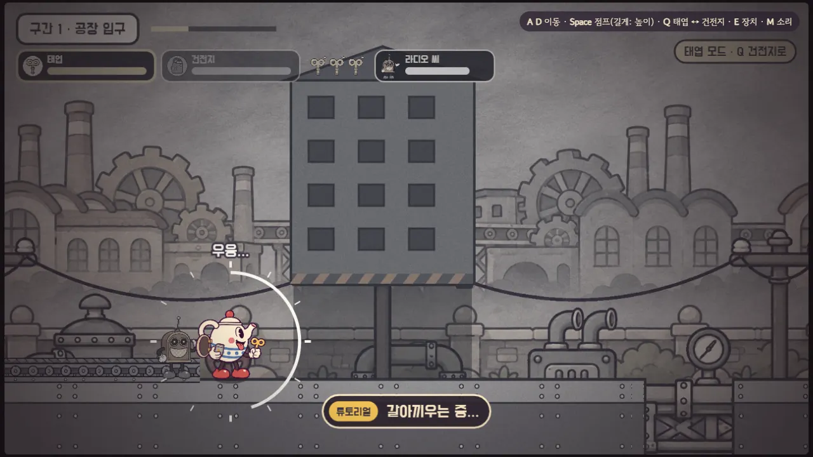
원인은 과열 폭발이 보글을 일정한 속도로 밀어내던 것이었습니다. 미리 왼쪽에 서 있으면 레버에서 900px 가까이 밀려나 건전지로도 2.5초가 걸렸는데, 제한은 2.2초였습니다. 어디 있든 레버에서 540px 자리로 밀려나게 고정하고, 경직이 풀린 뒤부터 2.05초를 줬습니다. 건전지는 1.47초에 닿고 태엽은 2.35초라 닫힙니다. 건전지가 필요하다는 규칙은 그대로 남겼습니다.
멜로디 여왕의 음악 안에서 태엽 보글은 0.5초마다 저절로 뛰고 좌우 입력이 1초마다 뒤집힙니다. 건전지 보글은 음악에 반응하지 않습니다. 6막까지 쌓은 규칙을 거꾸로 써서 새 공략을 만들었습니다.
멜로디 여왕은 멈추는 게 두려워 자신을 너무 감아 버렸습니다. 그래서 지금까지의 결정타(과감기)가 통하지 않습니다. 풀기는 속도 띠 안에서 천천히 돌려야 차고, 너무 빠르면 “팅” 하고 튕겨 15% 되돌아갑니다. 빠를수록 좋던 감기와 정반대 손맛입니다.
3~5막이 지루하다고 Codex에 전달했더니 Codex가 코드를 직접 줄였습니다. 로직 창에 무엇이 바뀌었는지 비교하게 한 뒤, 줄인 것 중 남길 것과 되살릴 것을 골랐습니다.
남김
되살림
문제
if (false && …)로 남김src/를 고친 것 자체가 역할 규칙 밖그다음 3막을 다시 플레이하니 “라디오는 어디서 왔고, 건전지는 왜 주는지” 물음표만 남았습니다. 템포를 위해 이야기를 뺀 결과였습니다. 그래서 3~5막 이야기를 직접 다시 짰습니다. 측량기 · 리본 · 마을 안 반복 콘텐츠를 버리고, 마을 밖으로 떠나는 이유와 라디오 씨가 쓰러졌다 태엽으로 다시 태어나는 장면을 중심에 뒀습니다.
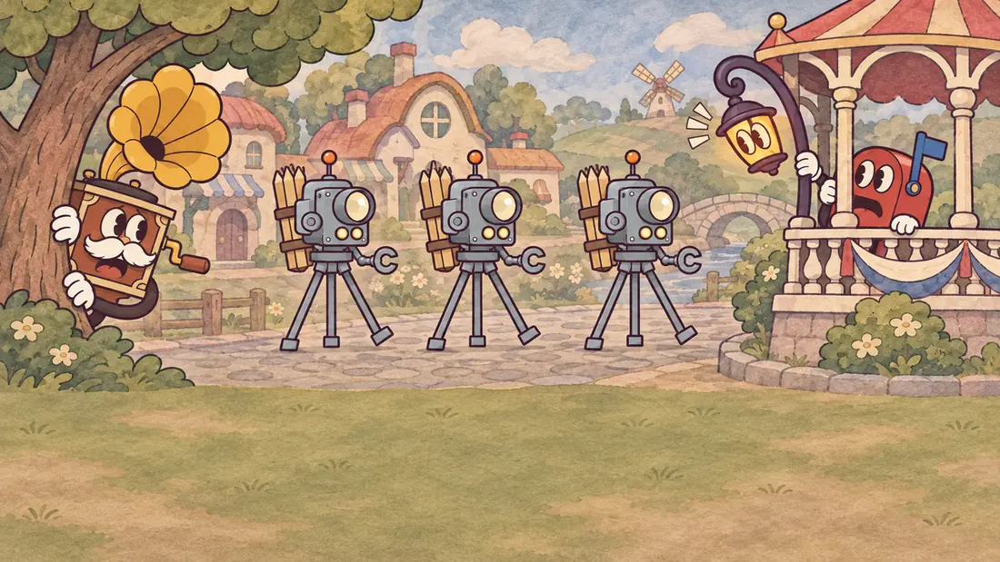
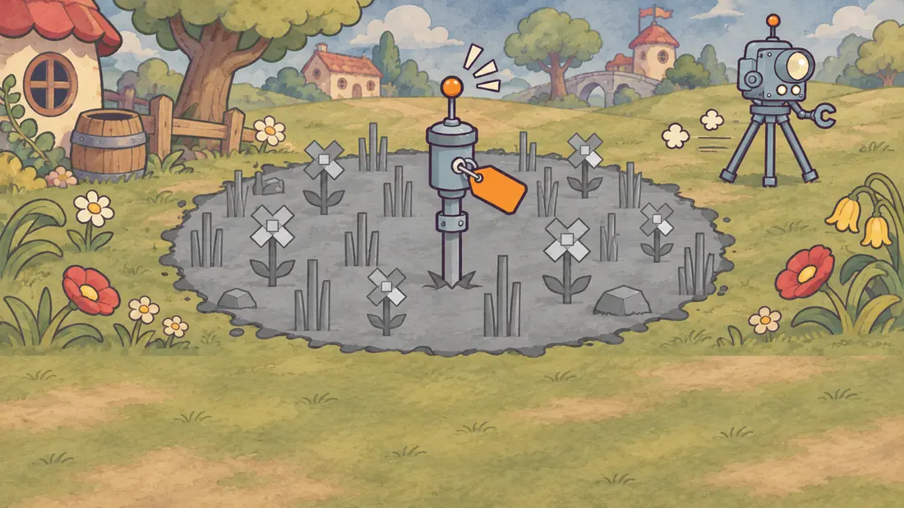
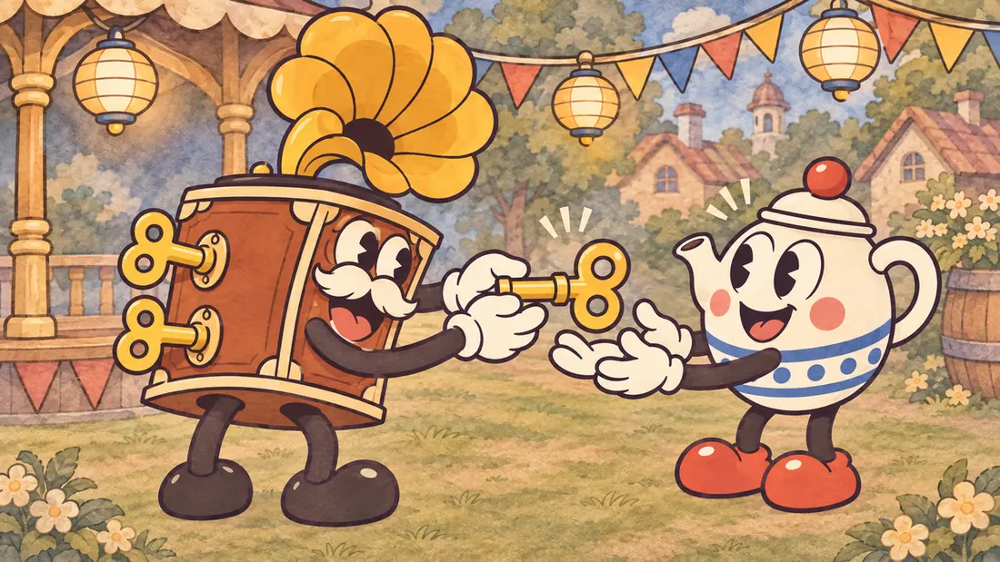
“기존보다 더 변화가 있게”라고 요청해서, 지시서에 전 · 후 실루엣이 확 달라야 한다를 규칙으로 넣었습니다.
주소 끝에 ?selftest를 붙이면 1막부터 7막까지 상태를 직접 바꿔 가며 확인합니다. 막을 추가하거나 다른 창이 코드를 고칠 때마다 항목을 늘렸고, 지시할 때도 “selftest 통과까지”를 끝 조건으로 넣었습니다.
항목이 줄어든 구간(131 → 116)은 Codex가 줄인 내용을 병합하며 없어진 장면의 항목을 지운 때입니다.
장면 전환은 모두 1930년대 아이리스(검은 원이 닫혔다 열림)로 넘깁니다. 컷신 위에도 필름 그레인 · 스크래치 · 깜빡임을 코드로 덮었습니다.
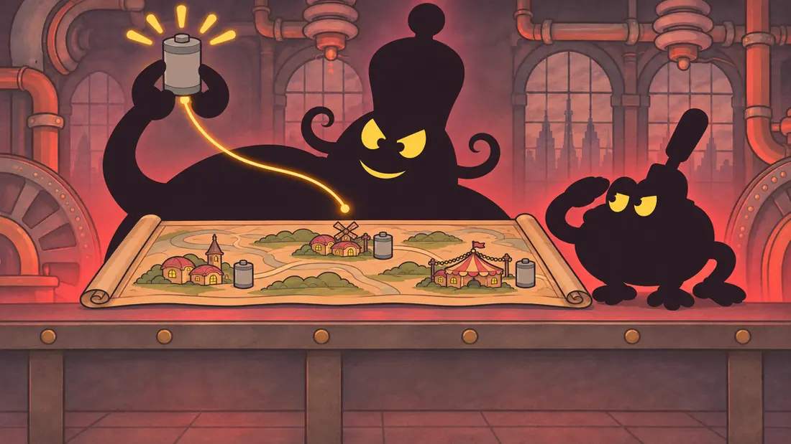
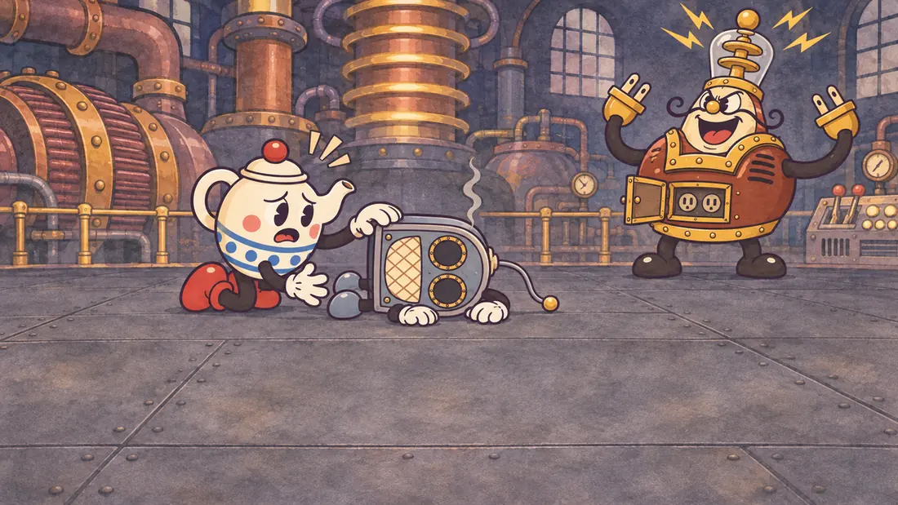
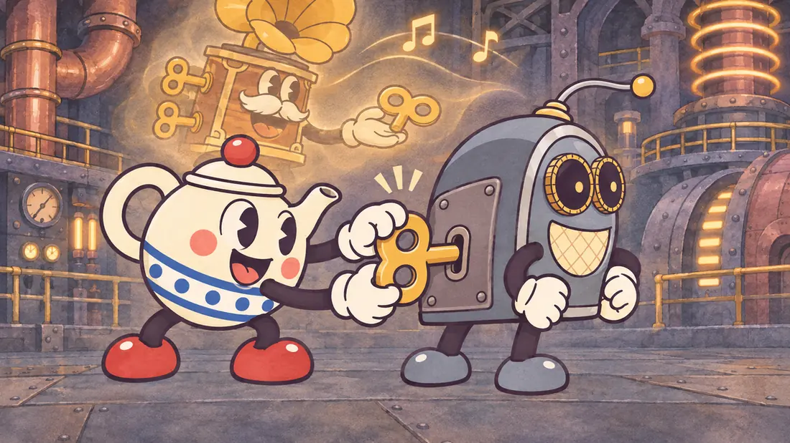
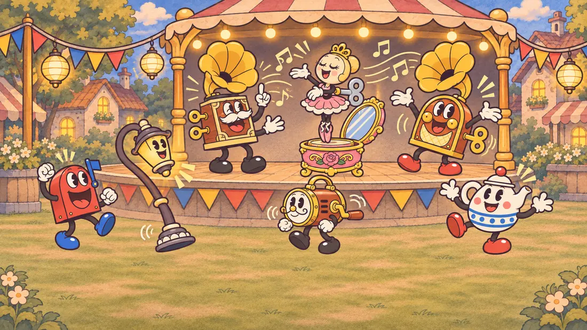
src/를 고친 일이 있었습니다. 처음부터 창마다 브랜치를 나누고, 코드 변경은 diff로만 받도록 하겠습니다.